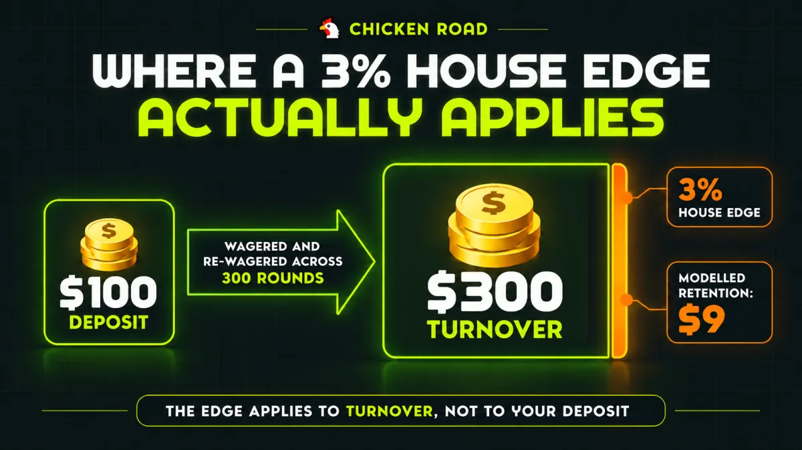

Data & RTP
House Edge Explained: Why the Casino Always Has an Edge
The house edge is 100% minus a game's RTP — the share of everything wagered a casino expects to keep. Why a 3% margin funds an industry, how turnover differs from deposits, and why none of it means a single round is rigged.
🔞 18+ only · Real-money gambling

A casino doesn't need luck. It doesn't need you to lose, it doesn't need a rigged round, and it doesn't need to know who you are. It needs volume — and a margin of a few percent applied to every amount wagered through it.
Why Does a Casino Need an Edge at All?
Because the edge is the product's price, and without it there is no business to run. A casino game is not a contest the operator enters against you; it is a service that charges a small, disclosed margin on activity, the way any other business charges one.
That framing matters because the alternative explanation — that games must cheat to be profitable — is the single most common misreading of how gambling economics work. A game with a published house edge and independently tested randomness makes money through arithmetic and turnover, not through interference.
This guide covers where the edge comes from, how a few percent adds up to an industry, and why it says nothing about whether your next round is winnable. It sits under How Crash Games Actually Work, the full guide to crash game mechanics.
What Is the House Edge, Exactly?
The house edge is the percentage of all money wagered that a game is modelled to retain over the long run, and it is simply 100% minus the game's RTP. There is no third quantity in between: a 97% RTP means a 3% house edge, and the two numbers describe one thing from opposite sides.
RTP, or return to player, is the share the game returns; the edge is the share it keeps. If you want the return side in full, What Is RTP in Slots and Crash Games? covers it. Everything below looks at the same number from the operator's end.
Think of a bureau de change. It quotes you a rate slightly worse than the mid-market one, and the gap is the spread. No individual transaction is unfair, no customer is targeted, and plenty of customers walk away having done well on the day's currency movement. The bureau still makes money, because the spread applies to every transaction that passes through.
How Does a 3% Edge Actually Make Money?
It applies to turnover, not to deposits — and turnover is far larger than deposits, because the same money gets wagered repeatedly. This is the mechanic people miss, and it explains the entire business model.
Take £100 deposited and staked at £1 a round. If your balance swings up and down as you play 300 rounds, you have wagered £300 in total, even though you only ever deposited £100. At a 3% edge, the modelled retention is 3% of that £300 turnover, not of the £100 deposit.
Scale that across every player on a platform and the numbers stop being small. Retention grows with activity rather than with losses, which is why operators compete on session length and game variety rather than on anything that would require rigging a round.
Game | Where the edge comes from | House edge | Arithmetic |
|---|---|---|---|
European roulette (single zero) | 37 pockets, but a straight-up win pays 35 to 1 | 2.70% | 1 ÷ 37 |
American roulette (double zero) | 38 pockets, same 35 to 1 payout | 5.26% | 2 ÷ 38 |
Any game modelled at 97% RTP | Payout table set below true odds | 3.00% | 100% − 97% |
The roulette figures are arithmetic from the wheel layout, not estimates. The third row is illustrative and is not Chicken Road's figure — the game's disclosed RTP is maintained on the Chicken Road hub page.
Does the House Edge Mean Individual Rounds Are Rigged?
No. The edge is a population-level statistic describing millions of rounds in aggregate, not a rule applied to any round you personally play. Nothing in the software checks your balance, notices a winning streak, or adjusts an outcome to restore the average.
The distinction is the same one that separates a life insurer's mortality tables from a prediction about any named customer. The table is accurate across the book and useless for the individual. A game's edge works identically: reliable across the aggregate, silent about your session.
What actually enforces this is independent testing. Certification checks that outcomes are statistically random and cannot be influenced after a bet is placed, which is precisely what would be required for a per-round edge to exist. That process is covered in What Does "Certified RNG" Actually Mean?.
If the Edge Is Only 3%, Why Do Players Lose Their Whole Balance?
Because variance is much larger than the edge, and a balance can only fall to zero once. Across 300 £1 rounds at a 3% edge, the modelled loss is about £9 — yet plenty of those sessions end at zero, and some end well ahead.
The edge is a slow, steady downward drift. Volatility is the wide swing around that drift, and over any realistic number of rounds the swing dominates completely. A high-volatility setting produces bigger swings in both directions, which is why the same balance can vanish long before the modelled loss would suggest.
That relationship is the practical reason to choose a stake size and a risk setting deliberately rather than by feel. Slot & Crash Game Volatility Explained covers how the swing works and why identical edges can feel nothing alike.
Can Any Betting System Beat the House Edge?
No betting pattern changes the edge, because the edge is built into each round's payout structure rather than into the sequence of rounds. Doubling after a loss, stopping at a fixed multiplier, waiting for a "cold" run — each redistributes when wins and losses land, and none alters what a round is worth.
This is worth stating plainly because the systems that circulate most widely are the ones that feel like they should work. A progression can produce many small winning sessions and one catastrophic losing session, which reads as success right up until it doesn't. Crash Game Strategy Myths works through the individual claims.
The one thing genuinely within your control is how much turnover you generate and at what stake. That is a budgeting decision, not a strategy.
What Do Players Get Wrong About the House Edge?
Thinking it's taken from the deposit. The edge applies to everything wagered, and a £100 deposit can easily generate several hundred pounds of turnover in one session.
Reading a low edge as low risk. Edge and volatility are separate. A low-edge, high-volatility game can empty a balance faster than a higher-edge, low-volatility one.
Assuming the operator needs you to lose. Retention comes from turnover across all players. Individual outcomes are irrelevant to the model, which is exactly why interfering with them would be a poor trade against a licence.
Expecting the edge to show up in a session. Over a few hundred rounds the modelled retention is a rounding error next to the swing. It only becomes visible across a sample no player produces.
Believing a game is "due" to pay after a losing run. Rounds are independent, and nothing corrects toward the average on your behalf.
Frequently Asked Questions
Does the house edge apply to each round or to my whole session?
To each round, and therefore to your total turnover rather than to your deposit or your session outcome. Every wager carries the same modelled margin, so the expected retention scales with how much you wager in total, not with how long you play or how much you originally deposited.
Can an operator increase the house edge on a game while I'm playing?
Not mid-session. Some providers do ship configurable RTP versions of a title that operators choose between, which effectively sets the edge — but that is a configuration chosen before the game goes live, and the operative figure should be visible in the game's own info panel.
Do bonuses reduce the house edge?
They change your effective cost of play rather than the game's edge, and wagering requirements usually claw much of that back. A bonus that must be wagered 30 times generates substantial turnover, and the edge applies to all of it, so the headline value and the realistic value differ considerably.
Which casino games have the lowest house edge?
Edges vary widely by game and, in games involving decisions, by the exact rules and how well the player plays. Single-zero roulette sits at 2.70% against 5.26% for the double-zero version — the same game, nearly double the margin. Check each game's own published figure rather than relying on genre averages.
If the edge is disclosed, why does it still feel hidden?
Because it is usually published as RTP, on a game-info panel most players never open, in a format that reads as a benefit rather than a cost. A 97% RTP and a 3% house edge are the same disclosure, and the first phrasing is the one that gets marketed.
So What Should You Do With This?
Treat the house edge as the price of playing rather than as evidence of anything unfair, and make your decisions about the two variables it doesn't control: how much you wager in total, and how much swing you're exposed to. Before depositing anywhere, open the game-info panel and find the RTP — if a site won't show it, that is the meaningful signal, not the number itself.
If you're comparing where to play, compare verified operators on licensing and terms rather than on bonus headlines. Set your budget before you start and treat it as an entertainment cost. 18+. Free, confidential support is available at BeGambleAware.org and GamCare.org.uk.
The house edge is one of five mechanics covered in how crash games actually work. Its mirror image is What Is RTP in Slots and Crash Games?, the swing around it is Slot & Crash Game Volatility Explained, and what stops it becoming a per-round rule is covered in What Does "Certified RNG" Actually Mean?.